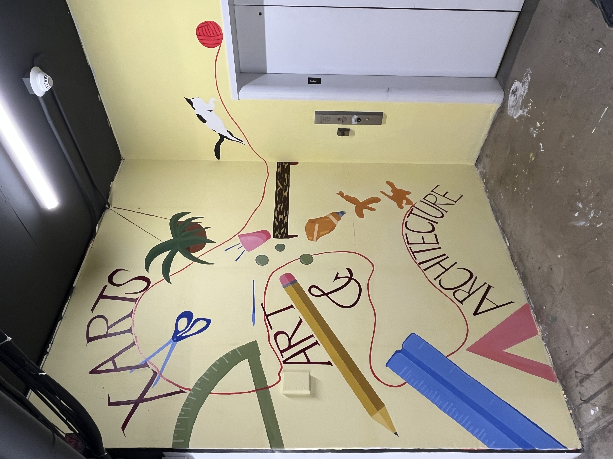

Xarts Mural
2025
Mural, 125 by 191.5 inches
This mural was created for the University of San Francisco’s art building (Xarts) with the help of two other classmates, Akwani and Anais. The mural is located in an elevator alcove and I wanted to bring a fun and happy design to the dark space. The idea of the mural is that a cat is chasing a red ball of yarn around and it knocks over a cup filled with art tools and materials. As the cat jumps away, the materials spill out toward the viewer along with the words “Xarts, art, and architecture.” Light colors and a fun scene succeeded in making this space effective.
